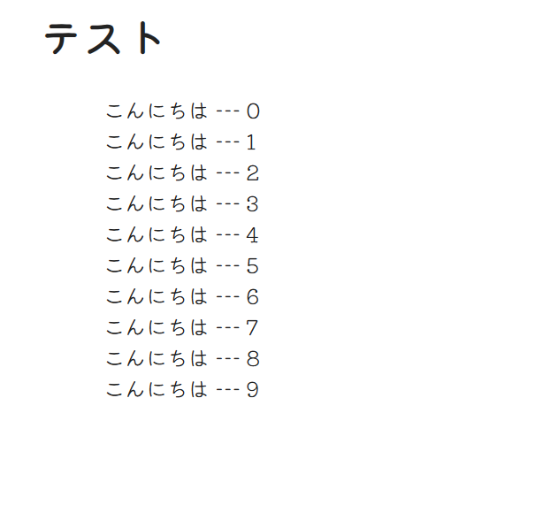
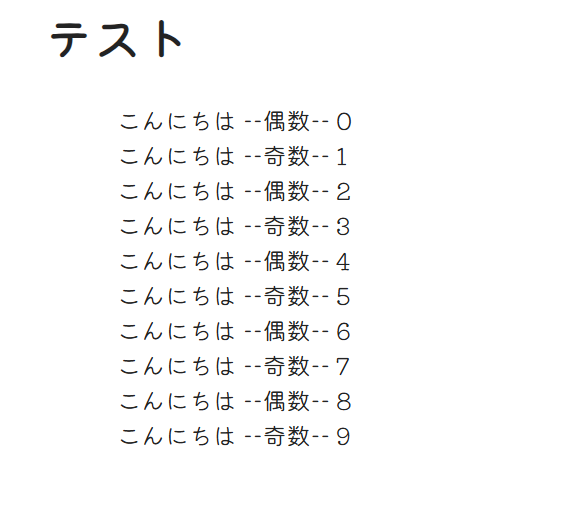
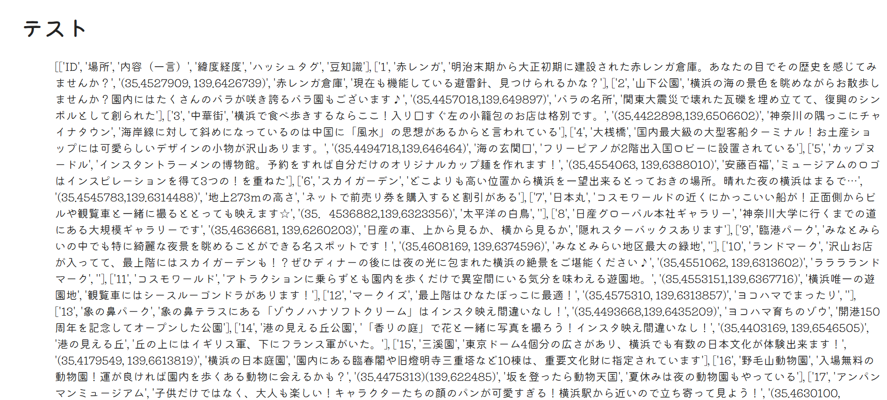
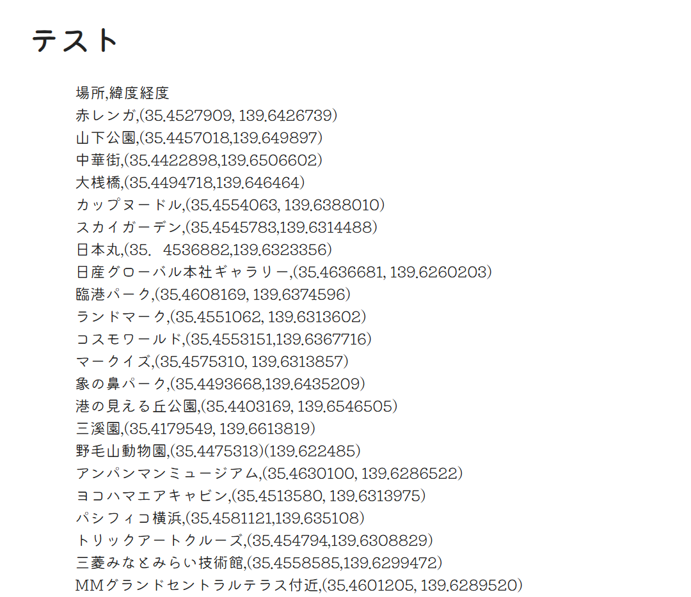
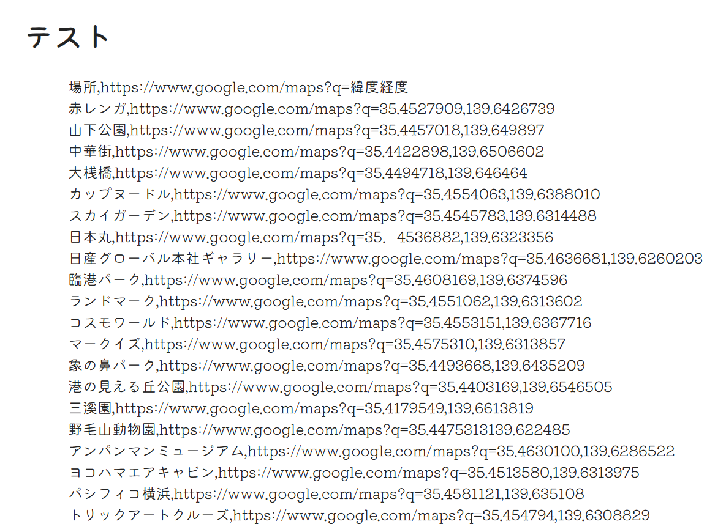
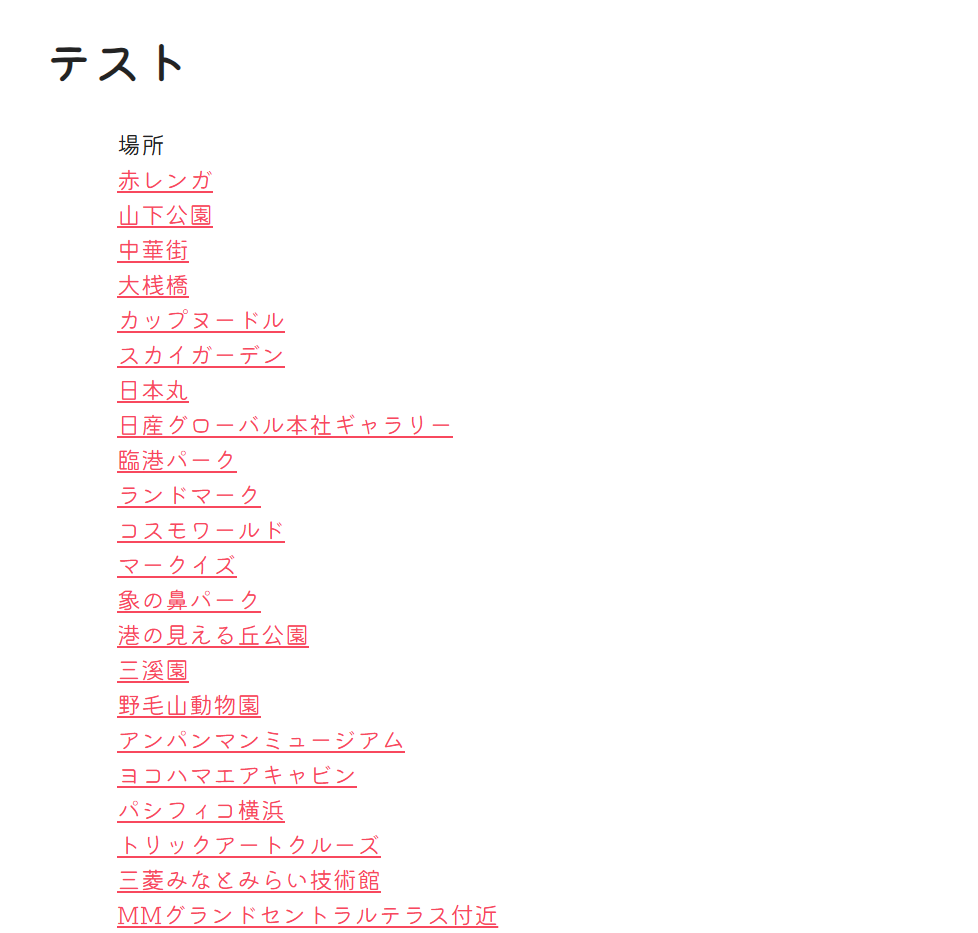

Flaskについて
PythonでWebサイトやWebアプリを構築するための「マイクロフレームワーク」です。
使用機材
・ステッピングモーター
・モータードライバ
基本構成
from flask import Flask, render_template, request, redirect, url_for
app = Flask(__name__)
# 編集ゾーンーーーーーーーーーーーーーーーーーーーーーーーーーーーーーーーーーーーー
##ここでルートのURLが指定された時に実行される
@app.route('/')
def index():
##index.htmlがレンダリングされる
a="Nori"
return render_template("index.html",txt=a)
# ーーーーーーーーーーーーーーーーーーーーーーーーーーーーーーーーーーーーーーーーー
if __name__ == '__main__':
app.run()
プログラム例 for
{% for data in list %}
{% endfor %}
html
<h1>テスト</h1>
<div>
{% for i in range(10) %}
{{txt}} --- {{i}}<br>
{% endfor %}
</div>

プログラム例 if
app.py
{% if ○○ %}
:
{% elif ×× %}
:
{% else %}
:
{% endif %}
html
<h1>テスト</h1>
<div>
{% for i in range(10) %}
<!-- %2は2で割った余り -->
{% if i%2==0 %}
{{txt}} --偶数-- {{i}}<br>
{% else %}
{{txt}} --奇数-- {{i}}<br>
{% endif %}
{% endfor %}
</div>

csvを表示
app.py
from flask import Flask, render_template, request, session, redirect, flash, url_for
from csv import reader
import os
app = Flask(__name__)
BASE_DIR = os.path.dirname(os.path.abspath(__file__))
# 編集ゾーンーーーーーーーーーーーーーーーーーーーーーーーーーーーーーーーーーーーー
##ここでルートのURLが指定された時に実行される
@app.route('/')
def index():
#index.htmlがレンダリングされる
csv_path = os.path.join(BASE_DIR, 'mmcsv.csv')
with open(csv_path, 'r', encoding="utf-8") as csv_file:
csv_reader = reader(csv_file)
list_mm = list(csv_reader)
return render_template("index.html", mmlist=list_mm)
# ーーーーーーーーーーーーーーーーーーーーーーーーーーーーーーーーーーーーーーーーー
if __name__ == '__main__':
app.run()
html
<h1>テスト</h1>
<div>
{{ mmlist }}
</div>

html
<h1>テスト</h1>
<div>
{% for data in mmlist %}
{{ data[1] }},{{ data[3] }}<br>
{% endfor %}
</div>

app.py
from flask import Flask, render_template, request, session, redirect, flash, url_for
from csv import reader
import os
app = Flask(__name__)
BASE_DIR = os.path.dirname(os.path.abspath(__file__))
# 編集ゾーンーーーーーーーーーーーーーーーーーーーーーーーーーーーーーーーーーーーー
##ここでルートのURLが指定された時に実行される
@app.route('/')
def index():
#index.htmlがレンダリングされる
with open(os.path.join(BASE_DIR, 'mmcsv.csv'), 'r', encoding="utf-8") as csv_file:
csv_reader = reader(csv_file)
list_mm = list(csv_reader)
for data in list_mm:
data[3] = "https://www.google.com/maps?q=" + data[3].replace("(","").replace(")","").replace(" ","")
print(list_mm)
return render_template("index.html",mmlist=list_mm)
# ーーーーーーーーーーーーーーーーーーーーーーーーーーーーーーーーーーーーーーーーー
if __name__ == '__main__':
app.run()

html
<h1>テスト</h1>
<div>
{% for data in mmlist %}
{% if data[1]=="場所" %}
{{ data[1] }}<br>
{% else %}
<a href={{ data[3] }} target="_blank">{{ data[1] }}</a><br>
{% endif %}
{% endfor %}
</div>

バックエンドとフロントエンド
フロントエンド
ユーザーが直接見て操作する部分です。HTML・CSS で見た目を作り、JavaScript（ReactやVueなどのフレームワーク）で動きをつけます。
バックエンド
ユーザーからは見えない部分で、サーバー側で動いています。ログインの認証、商品の在庫チェック、決済処理など「ロジック」を担い、データベースとやり取りしてデータを保存・取得します。